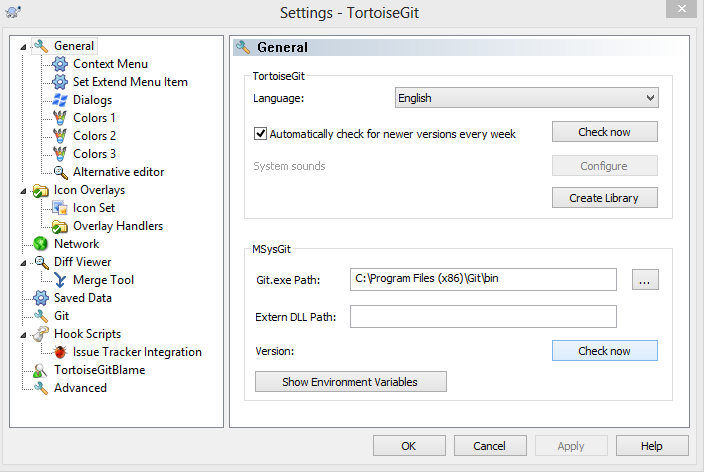
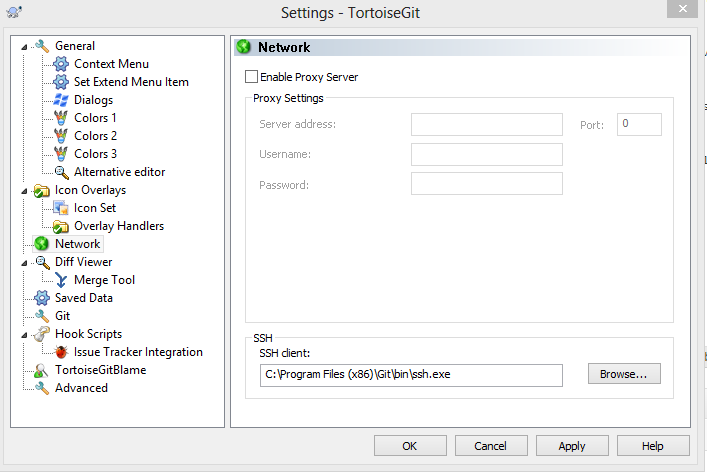
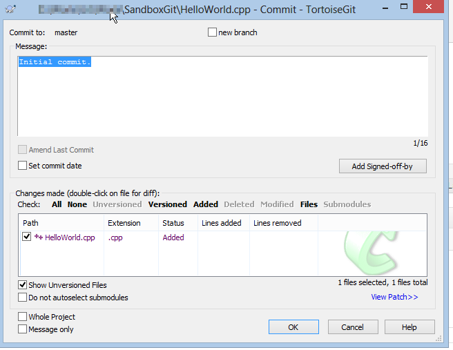

I have been doing some scripting in PowerShell 3.0 lately and I found this post by Scott Hanselman. Just go to that post and download powershellhere.inf, right click on it and click Install. It will give you a nice “PowerShell Prompt Here” context menu in Windows Explorer.
The easiest way to do that is to download and install the Mercurial 2.5.4 for OS X 10.8 binary package from the official Mercurial site. After downloading the file unzip it and open mercurial-2.5.4+20130405-py2.7-macosx10.8.mpkg.
There are a few ways to do this, but the best is via [ui] and [auth] sections in .hgrc (in your home directory). Your final .hgrc file should look like this:
Go to www.sourcetreeapp.com and download SourceTree for Mac. At the time of this writing the latest version of SourceTree was 1.5.8. SourceTree for Mac comes packaged as a dmg file – after you open the dmg file you install the app the normal Mac way – by dragging SourceTree.app into your Applications folder.
I recommend configuring SourceTree to use the system Mercurial. That way you get consistent Hg experience when working in Terminal and in the SourceTree GUI. To do that, run SourceTree and press “Command + ,” to open Preferences and then click Use System Mercurial.
This is a step-by-step guide on installing Mercurial and TortoiseHg on Ubuntu, and setting up a BitBucket account. This was tested on Ubuntu 12.04 LTS and Ubuntu 12.10.
This post describes setting up Git on Windows and using a private remote Git repository hosted on BitBucket.org. Here it goes:
1) Start by downloading Git fromthe msysgit site. At the time of writing the latest installer was Git-1.8.1.2-preview20130201.exe. For some unknown reason the installers are labeled “preview” which normally suggests unfinished product, but the versions are actually fully functional.
After downloading, run the installer and follow the steps. You may use the default options on each screen, but since we are going to try TortoiseGit later, on the first screen select “Simple context menu (Registry based)” and check only “Git Bash Here”. That will keep to your Windows Explorer context menu less cluttered.
2) Install TortoiseGit. At the time of this writing the latest version was 1.8.1. There is nothing special about installing TortoiseGit.
To verify the TortoiseGit installer integrated with your msysgit installation: right click anywhere in Windows Explorer and select TorstoiseGit > Settings from the context menu, then make sure you have the correct paths for Git.exe under the General section and the ssh client under the Network section.


3) Install the Credential Caching Git extension. We will be using Git via https:// instead of ssh and that extension caches the username and password, so we do not have to type them all the time. Download git-credential-winstore and GitPad for Windows 8 (.NET 4.0 required), unzip,copy git-credential-winstore.exe to the Git bin directory and run it. By default Git is installed in C:\Program Files (x86)\Git\bin on 64 Bit systems. Open your global .gitconfig file. The global .gitconfig file is in your home directory which on Windows Vista and above should be under C:\Users\<yourname>. Verify the you have this line in .gitconfig*:
4) Optionally you may want to change the default text editor that Git uses, e.g. you might need that for commit messages. The default editor in msysgit is Unix VIM. You can change that to Notepad with GitPad – a small utility found in the credential caching extension zip. Simply copy GitPad.exe inC:\Program Files (x86)\Git\bin and run it.
5) Create an empty Git repository onBitbucket.org – that will be your shared repository. If you are new to BitBucket you can check this shorttutorialon how to create a BitBucket account and a Git repo- the process is rather straightforward. For this demo create a repo and name it SandboxGit. Please note that BitBucket will create a bare repository. A bare repository is one without branches.
6) We are now ready to start playing with the SandboxGit repo. If you are new to Git, it is better to start in Git Bash at the beginning just to get a feeling of Git. Knowing Git command line will help you understand what TortoiseGit or any other GUI tool does later, because in almost all cases, all the GUI tools generate and execute Git commands for you.
The first time you do this Git will ask for a BitBucket.org password. After that it will remember the password, because of the credentials caching extension thatwe installed in step 3.
``` bash
git remote show origin
* remote origin
Fetch URL: https://user@bitbucket.org/primosoftware/sandboxgit.git
Push URL: https://user@bitbucket.org/primosoftware/sandboxgit.git
HEAD branch: (unknown)
Local branch configured for 'git pull':
master merges with remote master
Basically we have:
An origin alias that points to a remote repo at https://user@nullbitbucket.org/primosoftware/sandboxgit.git
A local branch master that will merge with the remote branch master. However, the remote master branch does not exist yet. It will be created when we do our first commit and push.
A remote HEAD branch that is unknown.
Think of HEAD as a symlink/shortcut to a branch. The HEADis unknown because there are no branches in the remote repository yet. Normally HEAD points to themasterbranch.
matching: pushes all local branches to remote branches with the same name. This may lead to unwanted remote branches created by accident.
simple: pushes only the current local branch to its remote brother which is usually a remote branch with the same name. This is a more intuitive behavior.
Verify that now we have a remote branch called master:
``` bash
git remote show origin
* remote origin
Fetch URL: https://user@bitbucket.org/primosoftware/sandboxgit.git
Push URL: https://user@bitbucket.org/primosoftware/sandboxgit.git
HEAD branch: master
Remote branch:
master tracked
Local branch configured for 'git pull':
master merges with remote master
Local ref configured for 'git push':
master pushes to master (up to date)
We are done.
#### Configure default name and email for commits
Right click anywhere in Windows Explorer and select **TorstoiseGit > Settings** from the context menu, then enter your name and email on under the **Git** section.

Click *Edit global .gitconfig*. Verify that the *.gitconfig* file now contains the user configuration:
``` ini
[credential]
helper = !~/AppData/Roaming/GitCredStore/git-credential-winstore
[user]
name = user
email = user@domain.com
Right click on the SandboxGit folder in Windows Explorer and select TorstoiseGit > Settings from the context menu, then go to the Git > Remote section. Verify the remote url to which the origin alias points.
In the SandboxGit folder create a fileHelloWorld.cppwith some code in it. For example:
#include<iostream>usingnamespacestd;voidmain(){cout<<"Hello World!"<<endl;cout<<"Welcome to Git"<<endl;}
Right click on the HelloWorld.cpp file and select TortoiseGit > Add. Check the HelloWorld.cpp file and click OK.
Right click on the HelloWorld.cpp file again and select Git Commit -> Master. Enter “Initial commit.” for a message. Check the HelloWorld.cpp file and click OK.

The commit is local. Up to this point we have done local changes only. The remote repository on BitBucket.org is still untouched.